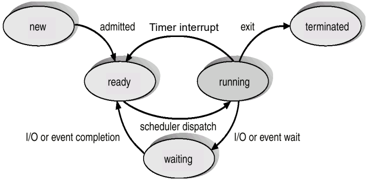

Lab 3: Synchronization and Semaphores
In a multiprocessor operating system, multiple CPUs execute kernel instructions concurrently. When concurrent processes manipulate shared data structures without synchronization, non-deterministic instruction interleavings trigger race conditions, corrupting state.
Lab 3 explores synchronization primitives inside xv6
running on an emulated 3-core RISC-V platform
(make CPUS=3 qemu):
- Spinlocks: Hardware atomic test-and-set primitives protecting short critical sections across CPU cores.
- Cooperative Sleep and Wakeup: Kernel coordination
primitives (
sleepandwakeup) enabling processes to yield the CPU while waiting for external events without busy-waiting. - Blocking Counting Semaphores: Building a sleep-based counting semaphore subsystem in the xv6 kernel.
- Race Resolution: Applying semaphores to eliminate race conditions in a shared counter and a multi-producer/single-consumer bounded buffer.

1. Why Shared Test Data Resides in Kernel Space
In Unix-like systems, fork() creates a new process by
allocating a separate virtual address space and duplicating the parent’s
user memory pages. If test variables were stored in user space, parent
and child processes would modify private, isolated memory copies.
To observe and synchronize genuine multi-process data races, the
shared counter (ucnt[]) and bounded buffer
(ubuf) are implemented inside kernel
memory. Because kernel memory is shared globally across all
processes, system calls provide concurrent entry points into identical
physical variables.
Process A (Parent User Space) Process B (Child User Space)
┌──────────────────────────┐ ┌──────────────────────────┐
│ int semid = 3 │ │ int semid = 3 │ <- Copied by fork()
└────────────┬─────────────┘ └────────────┬─────────────┘
│ sem_wait(3) │ sem_wait(3)
▼ ▼
════════════════════════ Kernel Space (Shared) ════════════════════════
├── semaphores[3] (struct semaphore: lock, value)
├── ucnt[0] (shared integer counter)
└── ubuf (circular buffer: head, tail, data[16])2. Spinlocks & Hardware Atomicity
A spinlock protects critical sections by
busy-waiting (“spinning”) until the lock word becomes free
(0).
struct spinlock {
uint locked; // 0 = unlocked, 1 = locked
char *name; // Name of lock
struct cpu *cpu; // CPU holding the lock
};The Atomic Test-and-Set Requirement
A naive software check
(if (lk->locked == 0) lk->locked = 1;) fails on
multi-core hardware because two CPUs can read locked == 0
simultaneously before either completes the write, allowing both to enter
the critical section concurrently.
To prevent this race window, RISC-V provides atomic memory operations
(amoswap). In xv6, acquire() invokes the GCC
builtin __sync_lock_test_and_set:
void acquire(struct spinlock *lk) {
push_off(); // 1. Disable hardware interrupts on the CURRENT CPU
if (holding(lk))
panic("acquire");
// 2. Atomically write 1 to lk->locked and return the previous value
while (__sync_lock_test_and_set(&lk->locked, 1) != 0)
; // Spin while lock was already held (old value was 1)
__sync_synchronize(); // Memory barrier preventing instruction reordering
lk->cpu = mycpu();
}
void release(struct spinlock *lk) {
if (!holding(lk))
panic("release");
lk->cpu = 0;
__sync_synchronize(); // Flush outstanding stores before clearing lock
// Atomically release lock (writes 0 to lk->locked)
__sync_lock_release(&lk->locked);
pop_off(); // Re-enable hardware interrupts on CURRENT CPU
}Code Tracing & Invariants:
- Interrupt Disabling (
push_off()/pop_off()): Must nest properly.push_off()increments a per-CPU countermycpu()->noffand disables interrupts on the first call.pop_off()decrementsnoffand only restores interrupts whennoffreaches0. - Atomic Test-and-Set
(
__sync_lock_test_and_set): Uses RISC-Vamoswapto write1tolk->lockedand return the old value atomically. If the old value was0, the lock was acquired; if1, the CPU spins. - Memory Barriers (
__sync_synchronize): Hardware memory barrier ensuring all memory reads and writes within the critical section complete beforerelease()clearslk->locked.
Disabling Interrupts vs. Multiprocessor Mutual Exclusion
- Interrupt Disabling (
push_off): Disabling interrupts is strictly local to the executing CPU core. It prevents deadlocks between a running thread and an interrupt handler running on the same core that attempts to grab the same lock. - Atomic Operations: Disabling interrupts on CPU 0
has zero effect on CPU 1 or CPU 2. Multiprocessor mutual exclusion is
achieved exclusively by hardware atomic bus/memory
locking (
amoswap).
Holding Spinlocks Across Context Switches: A thread must never sleep or yield the CPU while holding a spinlock. If Process A sleeps while holding spinlock , another process on CPU 1 attempting to acquire will spin uselessly, wasting CPU cycles and potentially deadlocking the kernel.
3. Cooperative Sleep and Wakeup: Resolving Lost Wakeups
Spinlocks are efficient for short critical sections (). A 10-cycle spin costs far less than the overhead of a thread context switch (). However, if a process must wait for a long-duration event (hundreds or thousands of cycles for I/O, available buffer slots, or child termination), spinning saturates the CPU core uselessly.
xv6 provides condition-waiting primitives:
sleep(chan, lk): Puts the calling process intoSLEEPINGstate waiting on an abstract address token (chan), releasing spinlocklk.wakeup(chan): Transitions all processes sleeping onchanintoRUNNABLE.
The Lost-Wakeup Race Condition
A naive implementation that releases the data lock before changing state creates a critical race window:
| Step | Waiting Thread (Consumer) | Signaling Thread (Producer) |
|---|---|---|
| 1 | Checks buffer: count is 0
must wait. |
|
| 2 | Releases data lock lk. |
|
| 3 | Acquires lk, deposits data, calls
wakeup(chan). |
|
| 4 | wakeup() finds zero processes
sleeping; does nothing. |
|
| 5 | Transitions state to SLEEPING and calls
sched(). |
|
| 6 | Thread sleeps forever, missing the notification that already occurred! |
The Two-Lock Handover Protocol
To eliminate lost wakeups, sleep() implements an atomic
lock handover using the process table lock p->lock:
void sleep(void *chan, struct spinlock *lk) {
struct proc *p = myproc();
// 1. Acquire process lock FIRST before releasing caller's data lock
acquire(&p->lock);
release(lk);
// 2. Safely modify process state
p->chan = chan;
p->state = SLEEPING;
sched(); // 3. Context switch to scheduler (scheduler releases p->lock)
// 4. Upon wakeup, clean up channel and re-acquire caller's lock
p->chan = 0;
release(&p->lock);
acquire(lk);
}
void wakeup(void *chan) {
struct proc *p;
for (p = proc; p < &proc[NPROC]; p++) {
if (p != myproc()) {
acquire(&p->lock);
if (p->state == SLEEPING && p->chan == chan) {
p->state = RUNNABLE;
}
release(&p->lock);
}
}
}Why Handover Eliminates the Lost-Wakeup Race:
sleep()acquiresp->lockbefore releasing the caller’s data locklk.wakeup()must acquire each process’sp->lockbefore inspectingp->stateorp->chan.- Consequently, if thread B attempts to call
wakeup()while thread A is insleep(), B cannot inspect A until A has finished settingp->state = SLEEPINGand enteredsched(). A can never miss the wakeup notification.
The Mandatory
while Re-Check Loop
Waking up does not guarantee the condition remains satisfied. A
waiter must always re-evaluate its condition inside a
while loop:
acquire(&sem->lock);
while (sem->value == 0) {
sleep(sem, &sem->lock);
}
sem->value--;
release(&sem->lock);- Broadcast Wakeups:
wakeup()unblocks all threads waiting onchan. If 3 threads wake for 1 available resource, only the first thread to execute consumes it; the other 2 findvalue == 0and must resume sleeping. - Spurious Scheduling: Another process could
interleave between a process being made
RUNNABLEand actually running on a CPU core.
4. Kernel Counting Semaphore Implementation
The lab adds a fixed table of 32 counting semaphores
(semaphores[MAX_SEMAPHORES], where
MAX_SEMAPHORES = 32) in
kernel/semaphore.c.
struct semaphore {
struct spinlock lock; // Protects value and prevents lost wakeups
int value; // Available resource count
int in_use; // Allocation tracking flag
};Course Textbook vs. Lab Semaphore Semantics
| Property | Textbook Semaphore | xv6 Lab Semaphore |
|---|---|---|
wait() behavior |
Decrements unconditionally: . Blocks if . | Blocks while . Decrements only when . |
| Value range | Can be negative (). | Strictly non-negative (). |
| Meaning of negative value | Absolute value equals the number of blocked threads. | Value cannot be negative; blocked threads are not reflected in . |
Core Function Implementations
// Acquire resource, blocking while unavailable
void sem_wait(int semid) {
struct semaphore *sem = &semaphores[semid];
acquire(&sem->lock);
while (sem->value == 0) {
sleep(sem, &sem->lock); // Channel is the unique semaphore pointer
}
sem->value--;
release(&sem->lock);
}
// Release resource and wake all waiting processes
void sem_signal(int semid) {
struct semaphore *sem = &semaphores[semid];
acquire(&sem->lock);
sem->value++;
wakeup(sem); // Wakes all threads sleeping on this semaphore's channel
release(&sem->lock);
}
// Inspect current semaphore counter
int sem_getvalue(int semid) {
struct semaphore *sem = &semaphores[semid];
acquire(&sem->lock);
int val = sem->value;
release(&sem->lock);
return val;
}5. Part 3: Shared Counter Race Condition
The Bug
Parent and child each increment counter 0
times, expecting a combined total of
.
Each increment performs two separate system calls:
int val = ucnt_get(0); // Read counter from kernel
ucnt_set(0, val + 1); // Write incremented counter to kernelWithout synchronization, two cores execute ucnt_get(0)
concurrently, reading the identical value
.
Both compute
and write it back, resulting in a lost update. The
final count falls well short of 2000.
The Fix: Binary Mutual Exclusion
Initialize a semaphore with initial value 1
before calling fork():
int semid = sem_init(1); // Binary mutex
// In do_work() across both parent and child:
for (int i = 0; i < N; i++) {
sem_wait(semid);
int val = ucnt_get(0);
ucnt_set(0, val + 1);
sem_signal(semid);
}Trap: Protecting
ucnt_getanducnt_setwith individual, separate wait/signal pairs fails. The race window sits between the read and write calls. The entire read-modify-write sequence must reside inside a single critical section.
6. Part 4: Multi-Producer, Single-Consumer Bounded Buffer
Two producer processes write 48 characters each
(MSG_SIZE = 48, yielding
total) into a 16-slot circular buffer (ubuf,
UBUF_SIZE = 16), while a consumer process reads all 96
bytes (MSG_SIZE * NUM_PROD = 96).

Synchronization Invariants
To prevent buffer overflow, underflow, and race conditions on
head/tail indices, three semaphores are
required:
| Semaphore | Initial Value | Purpose |
|---|---|---|
empty |
16
(UBUF_SIZE) |
Tracks remaining vacant slots. Producers block when
empty == 0. |
full |
0 |
Tracks filled slots ready for reading. Consumer blocks when
full == 0. |
mutex |
1 |
Enforces mutual exclusion on buffer indices (head and
tail). |
At all quiescent times: .
Why Counting Semaphores Alone Are Insufficient: While
emptyandfulltrack the number of available slots, they do not enforce mutual exclusion. If two producers on separate CPU cores run simultaneously, both could decrementemptyand then concurrently modify the circular buffertailpointer, overwriting each other’s data in the same slot. A binarymutex(initial = 1) is strictly required to serialize buffer index manipulation.
Execution Protocol
Producer (writes character c): Consumer (reads character):
sem_wait(empty); sem_wait(full);
sem_wait(mutex); sem_wait(mutex);
ubuf_write(c); c = ubuf_read();
sem_signal(mutex); sem_signal(mutex);
sem_signal(full); sem_signal(empty);The Deadlock Inversion Trap
The order of sem_wait calls is critical:
- Correct Order:
wait(empty)thenwait(mutex). - Deadlock Order:
wait(mutex)thenwait(empty).- If a producer acquires
mutexwhen the buffer is full, it blocks onemptywhile retainingmutex. - The consumer attempts to acquire
mutexto drain a slot, but blocks behind the producer. - Deadlock: Producer holds mutex waiting for space; consumer holds space waiting for mutex.
- If a producer acquires
7. Lab Checkpoint & Quiz Key Points
- Spinlock vs. Sleep Trade-off:
- Use spinlocks when wait times are shorter than the context-switch overhead ().
- Use
sleep()when waiting on external events (I/O, locks held across scheduling points).
- Channel Identity: A sleep channel is simply a
memory pointer serving as an equality tag.
sem_waitandsem_signalpass the memory address ofstruct semaphore(sem) so signals on semaphore A never wake threads sleeping on semaphore B. - Semaphore Cleanup: Always call
sem_free()only after all child processes have terminated (wait(0)). Freeing a semaphore while threads are sleeping on it causes orphaned threads that never wake up.